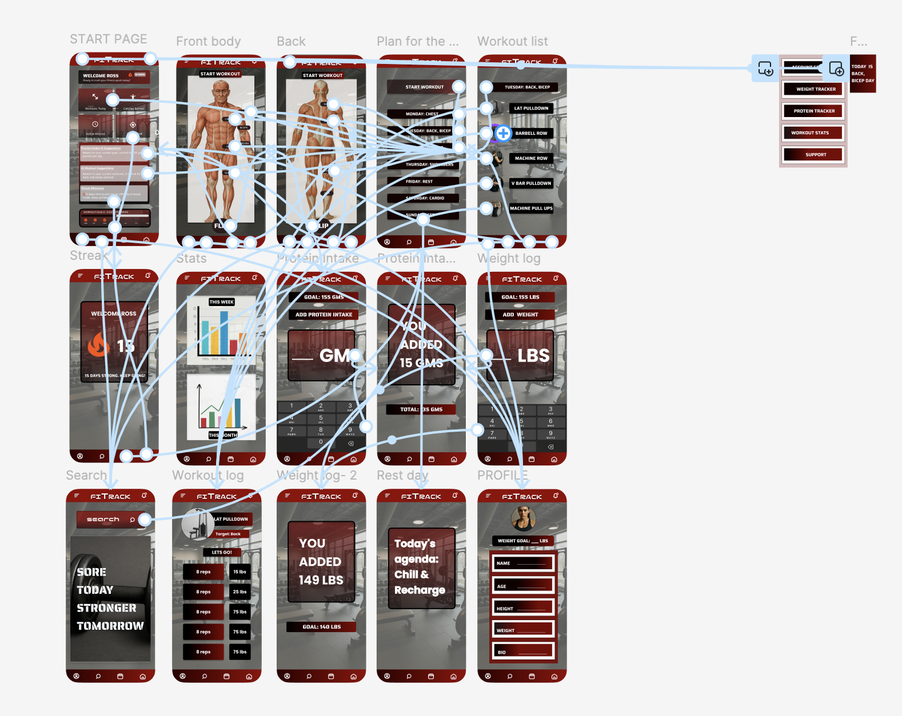
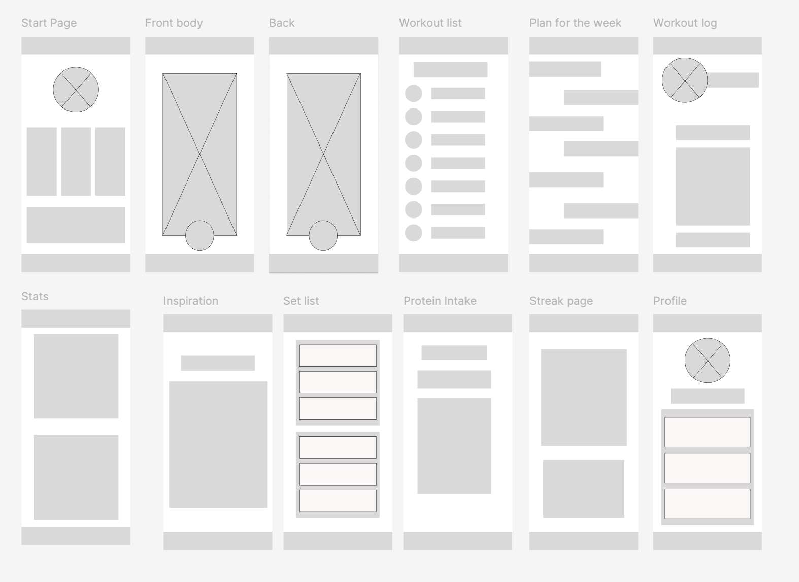
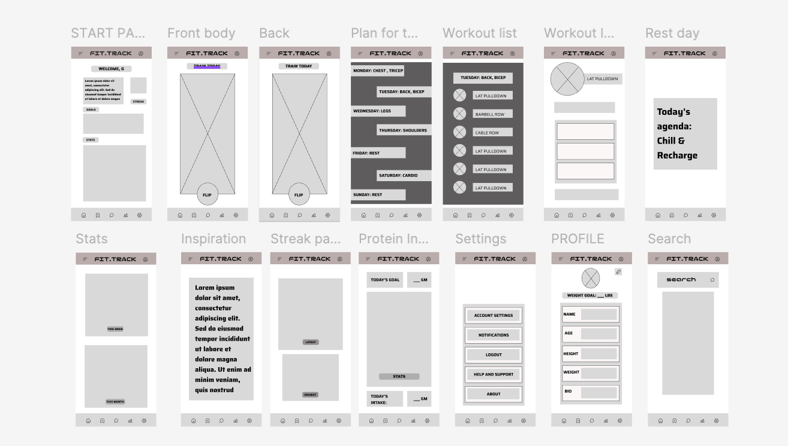
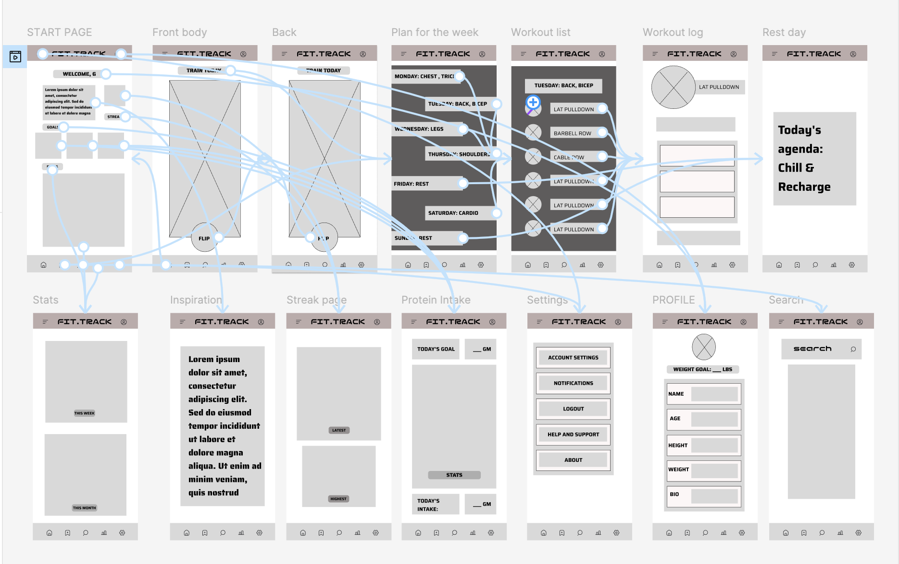
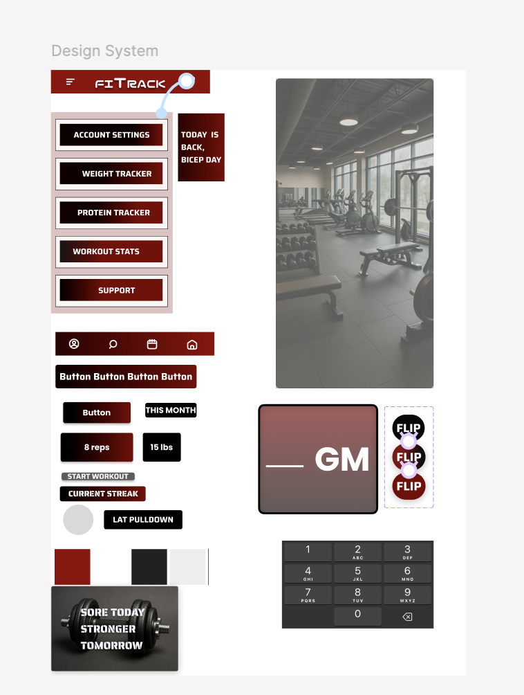

FitTrack —
AI-Powered Fitness App
An all-in-one mobile app for tracking workouts, nutrition, and weight — with AI coaching.

Overview
FitTrack is an all-in-one mobile solution for tracking workouts, protein intake, and weight progress — enhanced with artificial intelligence. Designed for fitness enthusiasts and beginners alike, it uses AI to deliver personalized coaching, smarter nutrition tracking, and adaptive progress monitoring, making healthy living simpler, more motivating, and more effective.
Problem. Generic, one-size-fits-all fitness plans with low motivation, plus the hassle of stitching together separate apps for fitness, nutrition, and health data.
Goal. Track and optimize the user's fitness journey while monitoring daily protein intake and weight progress.
My role & deliverables
UX designer from concept to delivery · low- to high-fidelity wireframing · interactive prototyping & user-flow mapping · UI design system.
User research
Research showed that enthusiasts and beginners alike are motivated by visible results and mental-health benefits, but struggle with fragmented experiences across multiple apps, tedious manual entry, and generic plans. Many find it hard to interpret their metrics and know what to do next, which — combined with low motivation and time constraints — leads to inconsistent logging and disengagement. The takeaway: people need an integrated, AI-powered tool that automates tracking, delivers personalized insight, and keeps them accountable.
Key pain points
- Low motivation — users lose consistency without personalized encouragement and visible progress.
- Fragmentation — tracking workouts, nutrition, and weight in separate apps is inconvenient and demotivating.
- Lack of personalization — generic plans and unclear metrics leave users unsure what to do next.
Design process
Wireframes
I started low-fidelity — gray boxes for every core screen: the body-diagram workout picker, weekly plan, workout log, stats, protein intake, streaks, and profile. Once the layout logic held up, I moved into digital wireframes and gave the app its name and nav bar, still in grayscale so the structure stayed the focus.


Prototype & user flow
Next I mapped how a session actually connects screen to screen — tapping into the body diagram to start a workout, logging sets, and landing back on stats or streaks — before carrying that same flow into the high-fidelity visual design shown above.

Design system
FitTrack's visual language leans into gym energy: a black-and-maroon palette, high-contrast type, and a bottom nav built for one-handed use mid-workout. I built a small component library — buttons, tags, the numeric keypad, streak and stat cards — so every screen stayed consistent as the screen count grew.

Next steps
- Usability testing on the AI suggestion flow — check that recommendations feel earned, not intrusive.
- A full accessibility pass — contrast ratios, labels, and alt text across every screen.
Takeaways
Designing the AI touches — "Protein Intake AI Suggestions," "AI Workout Suggestions" — taught me to label them clearly as suggestions the user can ignore, not automated decisions made for them. And building the streak flame and weekly/monthly stat charts showed me how a small, honest progress marker does more for motivation than a louder gamified system would.